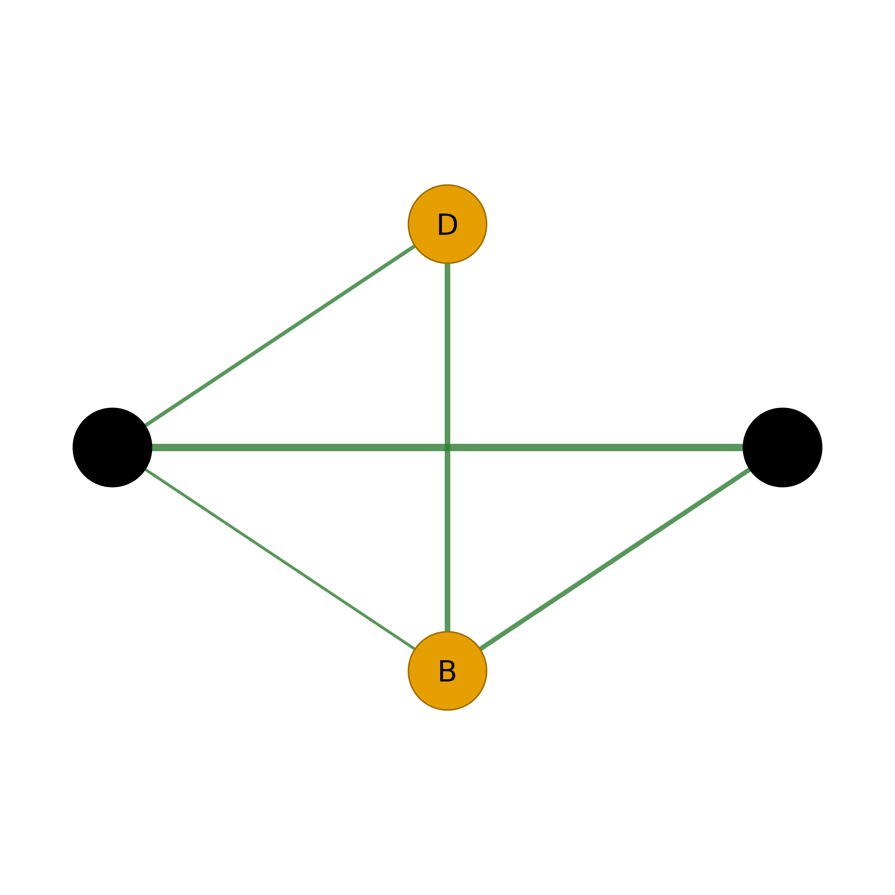
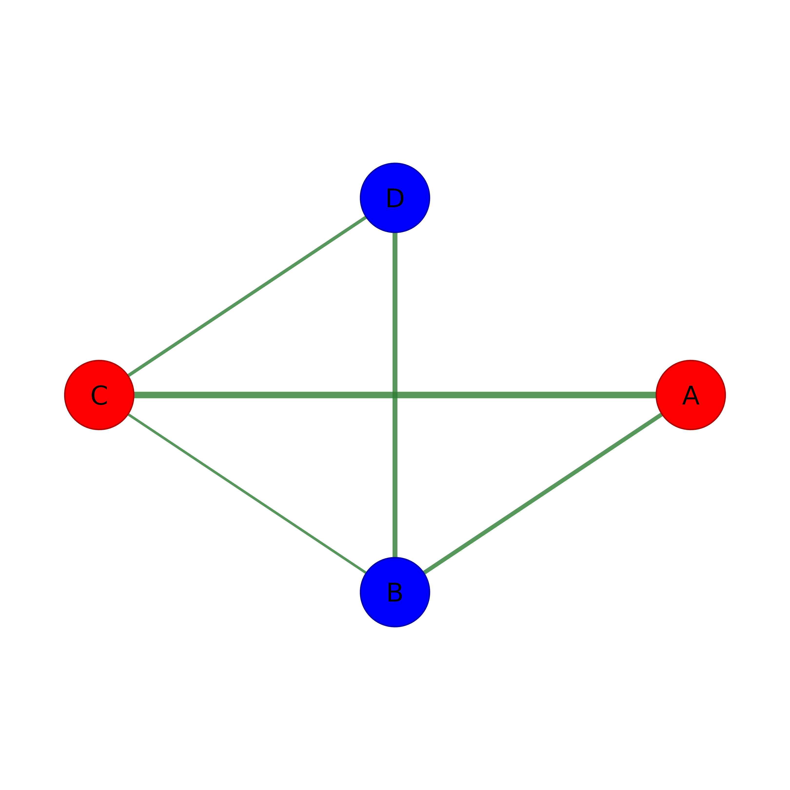

Generate colors for nodes based on community membership. Designed for
direct use with splot() node_fill parameter.
Arguments
- x
Network input: matrix, igraph, network, cograph_network, or tna object.
- method
Community detection algorithm. See
detect_communitiesfor available methods. Default"louvain".- palette
Color palette to use. Can be:
NULL(default): Uses a colorblind-friendly paletteA character vector of colors
A function that takes n and returns n colors
A palette name: "rainbow", "colorblind", "pastel", "viridis"
- ...
Additional arguments passed to
detect_communities.
Value
A named character vector of colors (one per node), suitable for
use with splot() node_fill parameter.
Examples
adj <- matrix(c(0, .5, .8, 0,
.5, 0, .3, .6,
.8, .3, 0, .4,
0, .6, .4, 0), 4, 4, byrow = TRUE)
rownames(adj) <- colnames(adj) <- c("A", "B", "C", "D")
# Basic usage with splot
splot(adj, node_fill = color_communities(adj))

# Custom palette
splot(adj, node_fill = color_communities(adj, palette = c("red", "blue")))
